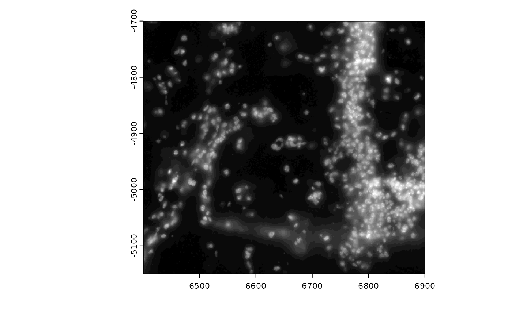

Display a giotto image in the viewer panel. Image object to plot
can be specified by providing the giotto object containing the
image (gobject), the image object name (image_name), and the
image object type (image_type). Alternatively, image objects can be
directly plotted through their respective associated params.
Usage
plotGiottoImage(
gobject = NULL,
image_name = NULL,
image_type = NULL,
giottoImage = NULL,
giottoLargeImage = NULL,
largeImage_crop_params_list = NULL,
largeImage_max_intensity = NULL,
...
)Arguments
- gobject
gobject containing giotto image object
- image_name
name of giotto image object
- image_type
type of giotto image object to plot
- giottoImage
giottoImage object to plot directly
- giottoLargeImage
giottoLargeImage object to plot directly
- largeImage_crop_params_list
(optional) named list of params for focusing on a specified region of a giottoLargeImage.
- largeImage_max_intensity
(optional) assign override value to treat as maximum intensity in color scale when plotting giottoLargeImage
- ...
additional params to pass to image object specific plotting functions
largeImage-specific additional params
largeImage_crop_params_list accepts a named list of the following
possible params to define a region of interest (ROI) to plot through
either a terra extent object OR x and y min and max bounds given as
numerics:
crop_extent– terra extent object to define crop ROIxmax_crop– x max of ROIxmin_crop– x min of ROIymax_crop– y max of ROIymin_crop– y min of ROI
largeImage_max_intensity accepts a numeric value to set the max
value in the plotting color scale. Can be used in case there are high
outlier intensity values in the image and a preview with alternative
color scaling is desired.
See also
Other basic image functions:
addGiottoImage(),
reconnectGiottoImage(),
updateGiottoImage()
Examples
g <- GiottoData::loadGiottoMini("vizgen")
#> 1. read Giotto object
#> 2. read Giotto feature information
#> 3. read Giotto spatial information
#> 3.1 read Giotto spatial shape information
#> 3.2 read Giotto spatial centroid information
#> 3.3 read Giotto spatial overlap information
#> 4. read Giotto image information
#> python already initialized in this session
#> active environment : 'giotto_env'
#> python version : 3.10
#> checking default envname 'giotto_env'
#> a system default python environment was found
#> Using python path:
#> "/usr/share/miniconda/envs/giotto_env/bin/python"
plotGiottoImage(g,
image_type = "largeImage", image_name = "dapi_z0",
largeImage_max_intensity = 200
)
